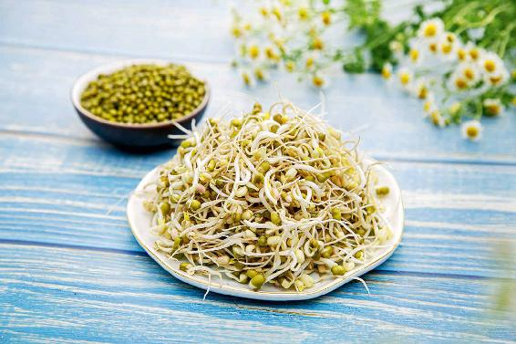
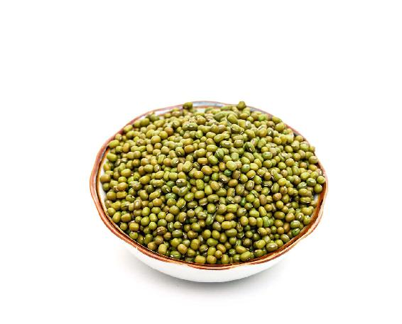
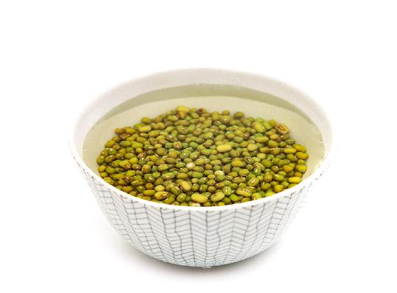
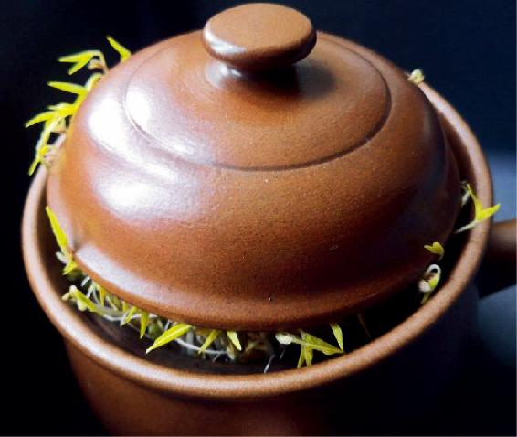
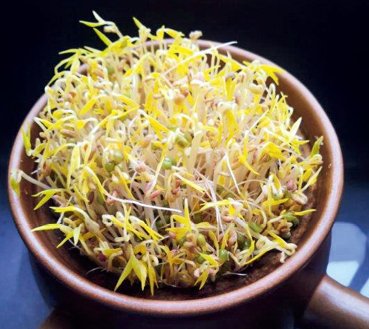
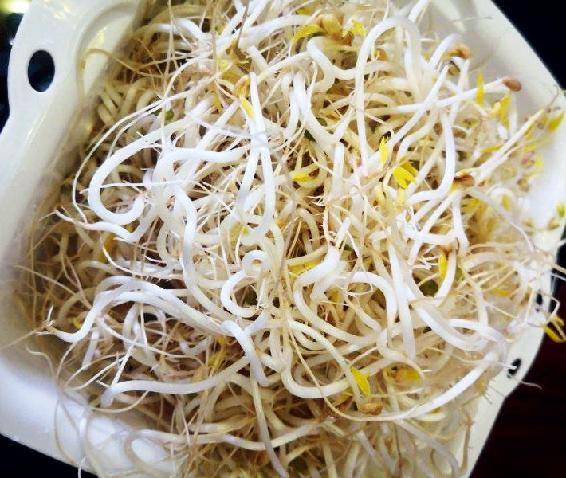
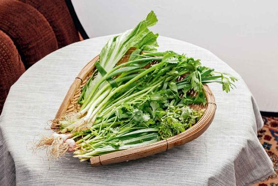
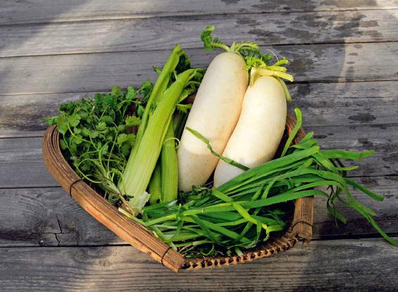

农历的大年初一，有时候是在1月份，还是冬天，但我们仍然称为“新春佳节”，为什么呢？是因为它总在立春的前后。按传统习俗，到了立春，新的一年才算正式开始。
每年春节（农历正月初一）对应的公历日期都有早有晚，但立春节气，每年都在公历2月4日左右，这就是中国古代阴阳合历的高明之处。从农业和人们平时生活的角度来说，立春才是一年的开始，四季养生也是从这个时候开始进入新一轮的循环。
早春时，气温还不高，蛰虫也还没有出来，但是树和草会先开始吐芽，所以说是春到人间，草木先知。
在人体内，也有与“草木”相对应的，就是肝系统。肝是属木的，春天来了，肝气就像草木一样生发。人的情绪对肝气影响很大。初春时，是不宜争强好胜的时候，尽量不与人发生无谓争执，以免扰动肝气。动脉硬化的朋友更是要小心，防止动怒伤肝，引发血压升高、头晕，甚至脑卒中。
从立春节气开始，就不再进行冬天的进补了，这时候的首要任务就是给身体排毒，还要抗病毒。
在立春节气，我们可以吃两样东西：春饼和春盘。整个立春节气的十五天都可以吃。如果您吃了觉得舒服，吃一整个月也没问题。因为立春在月之初，它属于一个节，是可以管一个月的。
立春吃春饼，主要有两个原因。
第一，春饼是粮食做的。在北方，春饼是用面粉做的；在南方，春饼也叫春卷，是用米粉做的。但不管是用面粉还是米粉，它们都是甘味的，多吃甘味的食物能健脾。
第二，春饼里卷的菜适合用春天（特别是早春时）长出来的蔬菜。在北方，早春时长出来的菜虽然非常少，但我们可以发一点绿豆芽，卷在春饼里吃。
在春天，凡是发芽的东西都能提升身体的生发之气。如果是喜欢发芽菜的朋友，您还可以再发一点儿萝卜苗、香椿芽，卷进春饼里吃，也是非常好的。
注意：在春饼里您要卷的是早春的蔬菜，而不是大棚里种植出来的。
如果没有当季的蔬菜，您就用豆芽，一般不用黄豆芽而用绿豆芽，因为绿豆芽排肝毒的效果更好。
绿豆芽可以清热解毒，又没有绿豆那么寒凉，在早春的时候，天气还比较冷，用绿豆芽正好。

在家发豆芽其实非常简单。
小瓶子来发绿豆芽适合第一次发豆芽的人，一般来说，只要瓶子里面没有沾过油，是很容易发成功的。
发绿豆芽
原料：绿豆。
做法：把绿豆放入瓶（玻璃瓶最好）中，放大约1/5，加水泡透，然后把水倒出来。天冷时放在暖和的地方，北方可以放在靠近暖气的地方，每天用水冲洗一次，过几天就能发出芽来。


允斌叮嘱：
每次泡绿豆芽的水要倒掉，只要保持湿润就行，不要让水泡着，否则容易泡坏。
如果想发出胖胖的、更加鲜嫩好吃的豆芽，那么还可以进一步这样做：
1.用重物压着，这样豆芽能长得更粗壮。
2.全程不见光，这样豆芽会更好吃。
如果您想让绿豆芽发得比较粗壮，可以把绿豆放在陶瓷盆里，加一点水泡上，泡透后把水倒掉，让它只是保持湿润。上面盖上一层纱布，最好是压上一个重的东西，比如一个碗，这样绿豆芽就可以发得比较粗壮（因为有了重力，绿豆芽就会使劲地往上顶，自然就变得粗壮了）。
发豆芽的第二个方法：旧水壶、旧药罐发豆芽
家里如果有不用的茶壶或旧的电热水壶，可以用来发豆芽。
用旧烧水壶发豆芽的方法
1.将绿豆放入水壶，倒入温开水，泡一夜，不用开盖，把水从壶嘴倒掉。
2.每天早晚淋两次冷水，再倒掉水，保持豆子湿润。
3.三到六天就可以吃了。
发豆芽的第三种方法：用煎药罐来发豆芽
这个方法是一位读者推荐的，是个很妙的法子。
用煎药罐发豆芽的方法
1.用温水把豆子发出小芽后倒入罐子。
2.每天灌水倒水，盖子一直盖着不揭开。
3.直到盖子稍微被顶开了，再过一两天芽比较粗了就可以了。



这个方法真是很妙——全程不见光，陶罐又透气，盖子也有一定分量可以压住豆芽。
在家里用这些方法发出来的豆芽是非常干净的，您不需要特别去清洗它。
绿豆发芽之后会有一层绿豆壳，您不要把它洗掉，做菜的时候一起来做，排肝毒的效果会更好。
读者评论：吃春盘后，精神比以前好了
Samie_le：开春以来一直吃春盘、凉拌韭菜，之前每到春天手指都会长湿疹，人也经常感冒。今年不长了，人也没感冒，精神也比以前好了，感谢老师的方子。
春天来了，除了吃春饼以外，我们还要吃春盘。
有的朋友给我留言说：“现在北方还是冰天雪地的,能吃春盘吗？”
其实，春节假期我们吃了很多大鱼大肉等肥甘厚味的食物，脾胃里早已积存了很多浊气和内热，这时候正需要通过吃春盘来助消化、解油腻。因此，吃春盘是不分南北的。
在人们印象中，春天应该是花红柳绿、阳光明媚的，其实这是晚春的景象。早春的时候，天气还比较寒冷，草还没有长，树还没发芽，但这都是表面现象，春天来了没有呢？它已经来了，天地之气已经在悄悄启动了。
比如在北京，不要说2月份，就是到了3月份，有时候也会下雪，但这并不表示春天没有来，因为这时候下的是春雪。
冬雪是粉末状的，而春雪是羽毛状的，是大片大片的雪花，因为它里面含有大量的水汽。
一过立春，我们就要按照春天的规律来保养身体了。这时，我们应该如何做呢？
过去一个冬天所受的风寒，这时候可能还残留在我们体内，而冬天我们又吃了很多进补的东西，导致身体内蓄积了一些内热，这个时候，我们不能再补了，而是要排毒、抗毒。
怎么做呢？我们可以来吃春盘。
1.春盘，就是一盘子初春新长的青菜
很多朋友不懂什么叫作春盘。古人所谓的春盘，其实就是一盘子春天新长出来的青菜，而且必须是辛味的，就是带有一点辛辣的味道，这样的蔬菜才能帮助我们的身体排毒、抗毒。
正月初七(人日)那天喝的七菜羹，里面用的蔬菜也是春盘所用的。如果您喝了七菜羹觉得很舒服，那您不妨继续喝下去；如果您觉得每天喝七菜羹比较麻烦，那您可以直接把春盘里的蔬菜凉拌，或者卷春饼吃，可以从立春节气开始，一直吃到三月初。
2.春盘怎么搭配呢？
最初的时候，古人是放五种菜——蒜苗、藠（jiào）头叶子、韭菜、油菜薹（tái）、香菜。
由于这五种都是辛香味的蔬菜，所以也叫五辛盘。后来又逐渐变化出各种不同的搭配——用春饼卷菜吃，配上青萝卜用来消食。这样一盘琳琅满目的蔬菜，就称之为春盘。

但不管怎样搭配，春盘讲究的是选择带有辛香味的当季绿色蔬菜，因为辛味有发散的作用。经过一个冬天，人体的五脏里积存了许多浊气，需要借助辛味给它排出去，辛味同时又能提升人体的阳气，防止春困，让人精神抖擞。
在五辛盘的搭配里面，藠头叶子现在可能不容易买到了。您去市场上买到的一般都是藠头。油菜薹，南方的朋友可以用，北方的朋友假如买不到的话，您可以用别的菜替换它。
除了这五种菜，春盘还可以选择芹菜、荠菜和萝卜缨。
3.初春养生，讲究的是一个“气”字
如果您想要学古人食用五辛盘，我推荐一个比较好的搭配——芹菜、韭菜、香菜、荠菜、萝卜缨。
这几种蔬菜各有各的功效，而且都特别有意思。
从初春的养生角度来说，它们的功效都带着一个“气”字：芹菜是祛风气的；韭菜是行血气的；香菜是通阳气的；荠菜是利肝气的；萝卜缨是消食气的。
荠菜作为一种野菜，市场上可能不太容易买到，您可以网购。早春，南方地区的荠菜已经长出来了，再过一段时间，山东的荠菜也会长出来。
如果您实在买不到荠菜，也可以用油菜薹或者蒜苗来代替。南方的朋友就用油菜薹，这是南方非常常见的蔬菜；北方的朋友就用蒜苗，蒜苗有醒脾气的作用，能激发人体的运化功能。蒜苗可以自己在家里发。
如果您想连续吃一个月五辛盘，那就不用每天都把五种蔬菜配齐，有什么吃什么，只要把这些辛味蔬菜都吃到，就很完美了。
冬天的养生，讲究的是一个“藏”字，重在封藏。初春的养生，讲究的是一个“气”字，到了初春要把自己的身体打开，就像到了春天要把窗户打开一样，让身体透一透气，让气血顺畅地流动起来。祛除浊气，生发阳气，当人体气血通和的时候自然就百病不生了。
吃了五辛盘，身体会更加生气勃勃。
一年有四立——立春、立夏、立秋、立冬，它们代表着四个季节的开始。在季节转换的时候，我们在饮食方向上也需要有大的调整，而且这个调整是可以保持两个月的。
立春时候的饮食方子，您可以从立春开始连续吃两个月；立夏时候喝的姜枣茶，也是可以连续喝两个月的，一直喝到三伏天之前；立秋的时候有一点特殊，因为立秋的时候，同时也是长夏，所以立秋的饮食方子有一点细微的变化；到了立冬的时候，补肾茶和补肾汤都是可以连续喝两个月的。所以一年中每个季节开始的时候，我推荐的饮食方子基本上都是适用于整个季节的，特别是每个季节的前两个月，您需要用这个方子。
立春时候吃的七菜羹、五辛盘，包括排浊抗霾茶，如果您在吃了、喝了以后觉得很舒服，很对您的胃口，那就不妨经常吃，一直吃到清明节，甚至吃到立夏之前都是可以的。
立春时候吃的七菜羹和五辛盘，不同地域的读者朋友们最初学着吃有时会纠结，评论区里分成了两大阵营。
北方的读者说：“陈老师，我们东北这里春季有的菜没有，夏季有的菜也没有，这盘七菜羹可把我难倒了，怎么办呢？”
另一位读者说：“新疆估计要到五六月份才有应季菜，现在的菜都是大棚菜或内地运过来的。新疆这个天现在哪有春天的感觉？完全还是在过冬。”

还有一位读者说了北方朋友们的普遍想法：虽然已经立春，但是北方地区依然天寒地冻，很少能买到大地菜，基本都是温室菜，像我说的那种蕴含了冬春之气的菜太少了。
而南方的一些读者却说：“我们南方的萝卜缨现在都已经很大了，都有一点老了，荠菜现在都开花了，这菜老了还可以做羹吗？”
其实，每年一到立春的时候，在吃七菜羹、五辛盘来养生的这个环节上，南、北的读者朋友们都会自动分成两个泾渭分明的阵营。
北方的朋友和南方的朋友的想法之所以不同，是因为中国实在太大了，从南到北，从东到西，气候、物产的差异非常大。所以每到一地，我都会给当地的朋友们讲地域养生，但在书里给大家推荐的节气养生法，都是具有普适作用的。也就是说，对于生活在中国大部分地区的朋友们来说，它都是有一定的适用性的。
您可以根据所在的地方进行一些调整，比如在初春，北方地区没有太多的应季菜，您可以用萝卜泡水发萝卜缨，用大蒜泡水发蒜苗，用绿豆泡水发豆芽，自己制造一些应季的菜。当然，您也可以网购。现在网购非常方便，而且立春的时候，南方地区的菜普遍已经上市了。
有些朋友一直没搞清楚春盘是生吃还是熟吃。其实，春盘里的菜如果是可以生吃的，那就生吃；如果不可以生吃，最好焯水或者炒熟来吃。
有读者问：“陈老师，能不能把这几种蔬菜焯水蘸酱油、芥末来吃？”这是一个很好的吃法，因为芥末也是辛味的，在春季的时候，它可以帮助身体排出浊气。
另一些留言问：“芹菜、荠菜、萝卜缨，这些菜是不是都要焯水？”其实，芹菜本身嫩嫩的，不需要焯水，可以直接凉拌吃。荠菜和萝卜缨最好焯一下水再吃，但如果是樱桃小萝卜的萝卜缨，则不需要焯水，可以直接蘸酱吃。
还有朋友问道：“这些菜可不可以用油炒着吃？”这是完全可以的。只是要注意炒的时候不要把它炒得太油，也不要炒得过熟，这样会丧失它们的新鲜美味，排毒的效果也会打折扣。
还有一些人想搭配其他的菜一起吃，比如有人问道：“春盘里可不可以加入胡萝卜丝和金针菇？”这些一般都是可以的。在春盘里面加一些其他食物，只要做得清淡，不影响辛味蔬菜的效果，都可以。